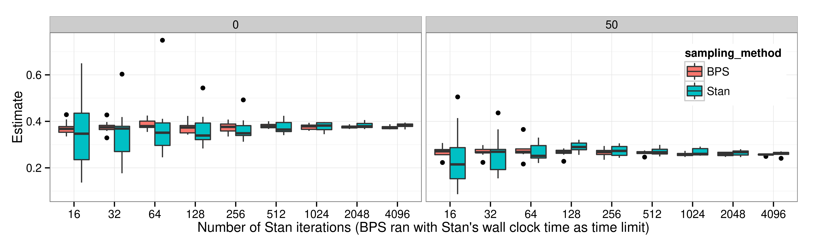

High-Dimensional Behaviour of Piecewise Deterministic Monte Carlo
Efficiency Comparison & Asymptotic Variance Estimation
6/16/2026
1 PDMPs: A New Frontier of Monte Carlo
(1953–)

(1978–)

(2008–)
A Blog Entry on Bayesian Computation by an Applied Mathematician
$$
$$
1.3 Classical Methods Turn Out to Be PDMPs in Disguise
Many PDMPs behave similarly in high dimensions.

discretized by a symplectic integrator
e.g. HMC has O(d^{1.25}) complexity

simulate piecewise linear trajectory
e.g. BPS with normal velocity has O(d^{1.5}) complexity
1.4 Digression: Killer Applications of PDMP

Sparse Markov Random Field with d=10
O(d^1) Local Implementation
Exploiting sparsity, BPS atteins better scaling than HMC (MSE/sec.)

Stochastic Gradient O(n^0)
x: sample size n, y: log ESS
Logistic regression with d=16
Using an appropriate control variate, the efficiency of Zig-Zag is O(1)
in the limit of n\to\infty, it outperforms Langevin.
2.1 BPS vs. FECMC


2.3 Empirical Comparison: BPS vs. FECMC

Effective Sample Size of U(x)=\|x\|^2, the negative log-density of 100 dimensional standard Gaussian, estimated over 1000 runs
2.4 Scaling Analysis = Deriving a Diffusion Limit
\text{Plotting } \textcolor{#0096FF}{Y_t^{(d)}}=\frac{\lvert\textcolor{#0096FF}{X}_{d\textcolor{#0096FF}{t}}^{\textcolor{#0096FF}{(d)}}\rvert^2-d}{\sqrt{d}} \text{ with } d=10^2,10^3,10^4:

2.6 Theorem 2: Analytic Expression of \sigma^2’s

While BPS atteins maximum at non-trivial value of \rho, FECMC achieves maximum at \rho=0
3.2 Theory Matches Practice: FECMC vs. BPS

ESS for U estimated over 1000 runs. Every bootstrap CI contains the theoretical limiting value {8}/{\sigma^2}.